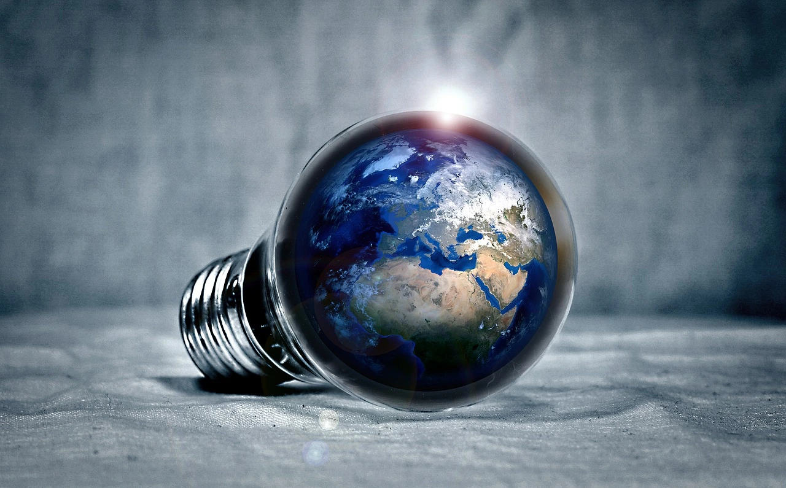

Économie d'énergie :
Chauffage
C’est le plus gros poste de consommation (65% des dépenses d’énergie). Pour le réduire :
- J’évite de surchauffer. La température conseillée est 19°C dans le salon et la salle à manger et 16°C dans les chambres.
- J’éteins les radiateurs quand les fenêtres sont ouvertes pour aérer.
- Lors de mon absence en journée, je laisse les volets et rideaux fermés pour conserver la chaleur et baisser le chauffage.
- Je baisse le chauffage dans les pièces inoccupées.
- Je purge régulièrement les radiateurs.
- Je fais entretenir tous les ans ma chaudière par un professionnel.
- J’installe un système de régulation et de programmation du chauffage.
Astuce : Baisser la température de 1°C, c’est 7% de consommation en moins.
A SAVOIR : L’entretien annuel des chaudières est obligatoire.
Une chaudière entretenue dure 2 à 3 fois plus longtemps et consomme 10% d’énergie en moins.
Eau chaude
- Je règle la température de l’eau chaude sanitaire entre 55°C et 60°C (ce réglage permet également de supprimer le risque de brûlure).
- J’isole les tuyaux et le ballon d’eau chaude.
- J’installe un mitigeur ou un robinet thermostatique.
Appareils électriques et éclairage
- J’éteins la lumière et les appareils électriques (TV, Hi-fi, ordinateur…) lorsque que je ne m’en sers pas.
- J’éteins les appareils plutôt que de les laisser en veille. Leur consommation en veille peut représenter jusqu’à 10% de ma facture d’électricité hors-chauffage.
- Je débranche les appareils électriques lorsque je ne les utilise pas : chargeur de portable, petit électroménager…
- Je dépoussière les lampes et abat-jour pour une meilleure luminosité.
Astuce : J’éteins les veilles des appareils Hi-fi, ordinateurs, TV… avec une multiprise munie d’un interrupteur.
Electroménager
Réfrigérateur-congélateur :
- Je ne mets pas d’aliments encore chauds dans le congélateur ou le réfrigérateur.
- Je dépoussière les grilles arrière de ces appareils.
- Je dégivre dès que la couche de givre dépasse 3 mm.
- Je nettoie les joints des portes et je les change si besoin.
- Je ne place pas ces appareils près d’une source de chaleur (four ou fenêtre ensoleillée par exemple).
Lave-linge :
- Je lave mon linge à basse température
- Je remplis entièrement mon lave-linge avant de le mettre en marche.
- Je fais sécher mon linge à l’air libre (le sèche-linge est très énergivore). Si ce n’est pas possible : j’essore bien le linge avant de le mettre dans le sèche-linge.
- Astuce : 25% d’électricité économisée avec un lavage à 40°C au lieu de 60°C.
Lave-vaisselle :
- J’utilise la touche « Eco ».
- Je remplis entièrement le lave-vaisselle avant de le mettre en marche.
- Je nettoie régulièrement les filtres et joints de porte.
Cuisson :
- Je couvre les casseroles lorsque je fais bouillir de l’eau (cela divise par 4 la consommation d’énergie).
- Je démarre un nettoyage par pyrolyse à la fin d’une cuisson pour profiter de la chaleur déjà produite.
En cas d’absence prolongée :
- J’arrête la production d’eau chaude.
- Je débranche tous les appareils électriques.
Remplacement ou achat de nouveaux équipements :
L’installation d’équipements performants (pour le chauffage, l’électroménager, l’éclairage…), couplée à ces gestes, me permettra de réduire significativement ma consommation d’énergie.
(Cf : Energie-Info)
